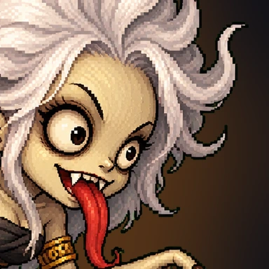

Pasang game
Setelah itu Perang Dedemit terbuka layar penuh dari ikon Pocong di layar utama.
Sebelum bertarung
Esc untuk jeda. Panduan ini bisa dibuka lagi dari layar pilih arena.
Atur audio, tampilan, dan kontrol permainan.
A / D · Gerak 2× A / D · LariW · Lompat S · Menunduk / turun cepat2× S · Salto SPACE · Kombo 3 pukulanI / O · Skill P · Ultimate
Pertarungan dijeda. Siap melanjutkan?